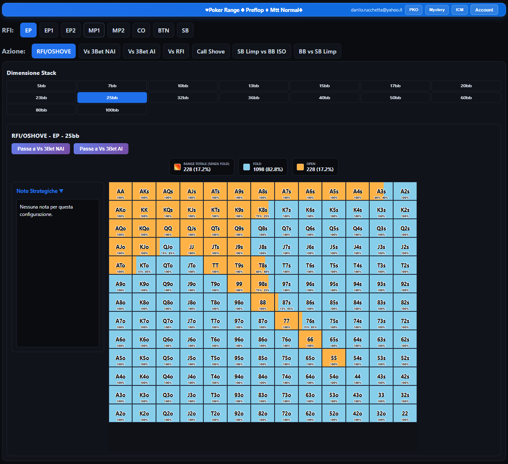
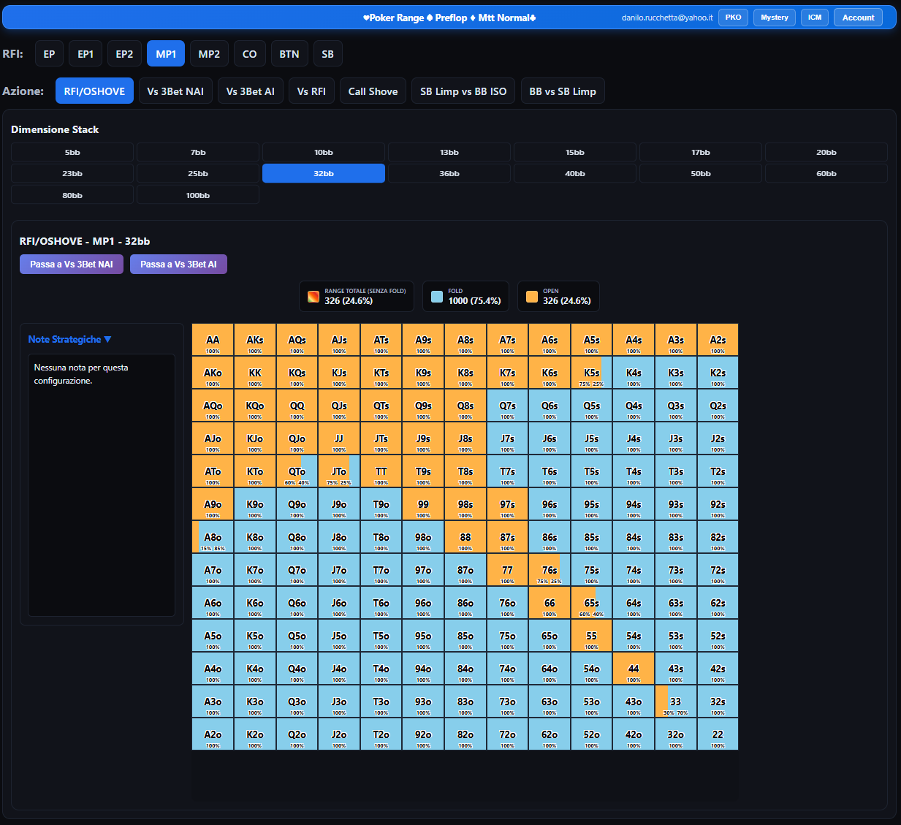
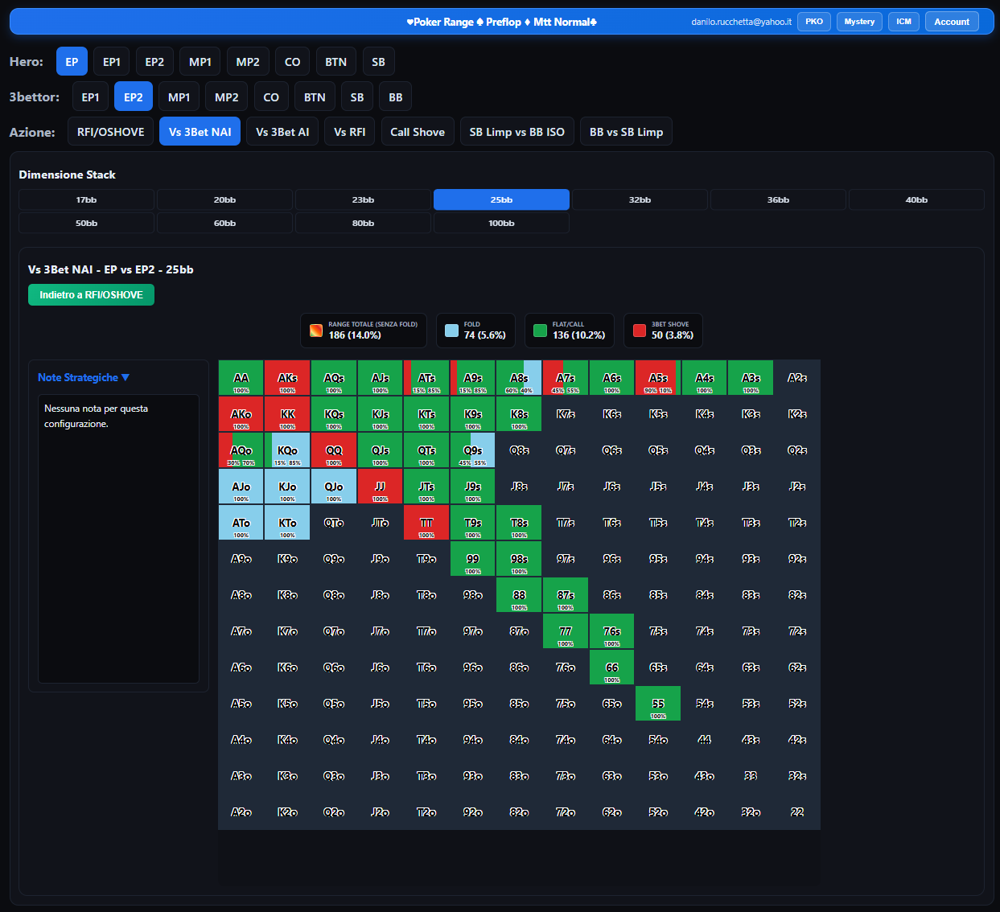
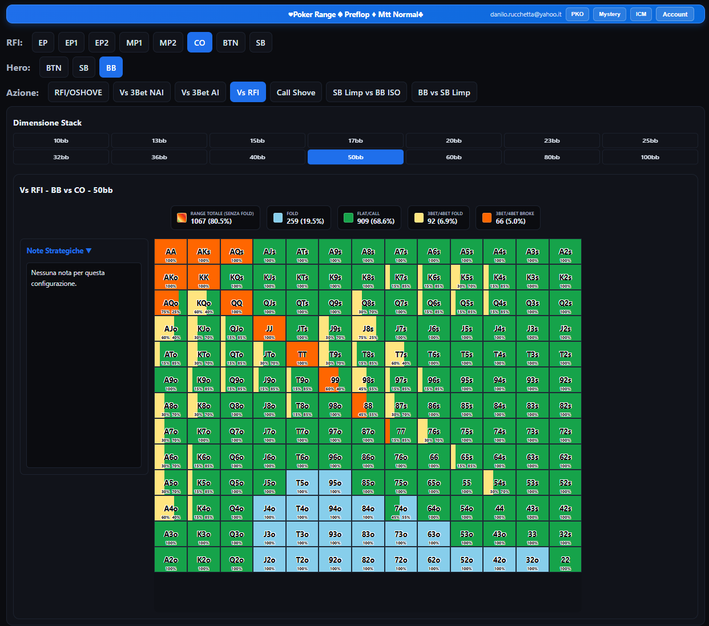
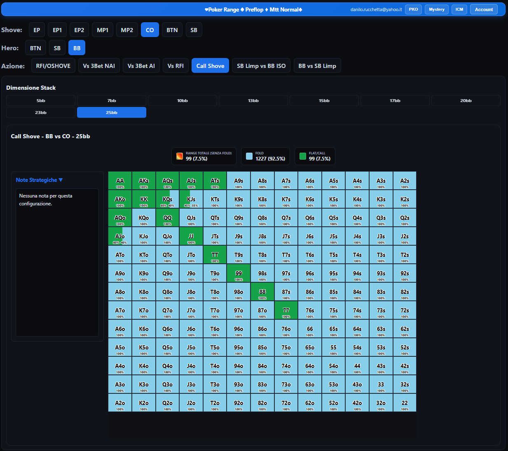
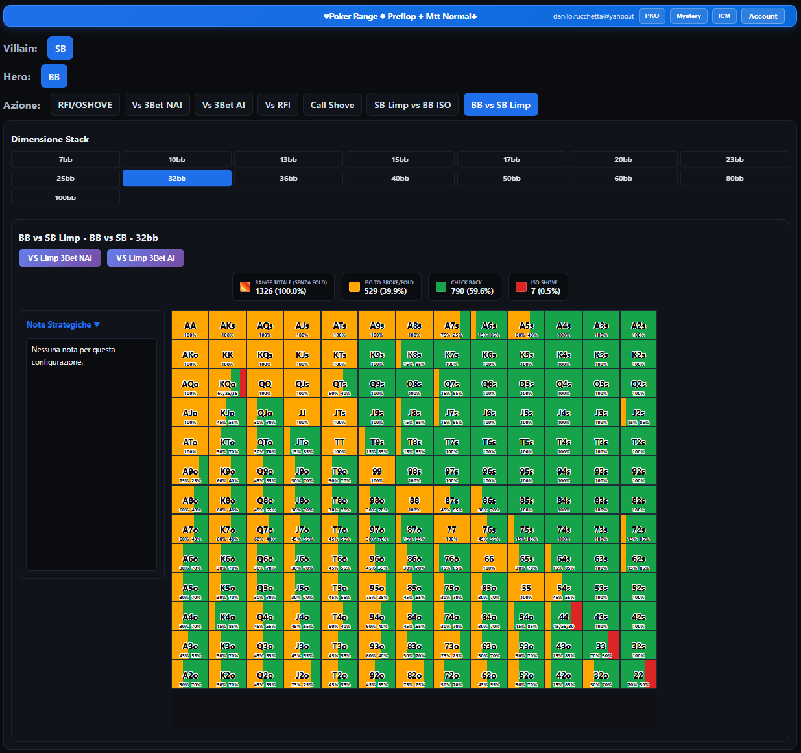
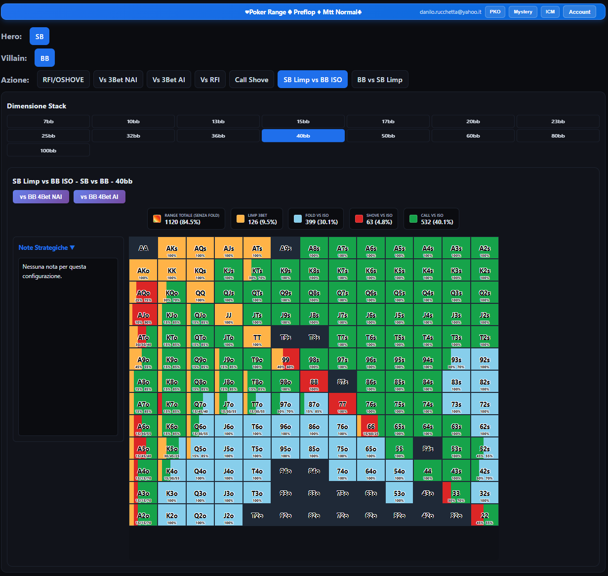

Range GTO PreFlop per chi gioca tornei: RFIRaise First In, in italiano "rilancio per primo": la prima apertura del piatto, quando nessun altro giocatore ha ancora agito., Vs RFIVersus Raise First In: quando Villain apre e Hero deve decidere se foldare, callare o raisare., Vs 3Bet NAIContro una 3bet non all-in. e Vs 3Bet AIContro una 3bet all-in., Call ShoveLa decisione se chiamare o meno un all-in avversario., BB vs SB LimpQuando BB si trova contro un limp di SB., SB Limp vs BB ISOQuando Hero, dopo aver limpato, riceve un iso-raise da parte di BB. con switch diretti tra le sequenze più comuni al tavolo.
Ogni click aggiorna la matrice all'istante: cambi posizione, stack o scenario e il risultato appare subito, senza ricaricare la pagina o aspettare un calcolo lato server. L'intera struttura è pensata per essere istantanea. Tutti i parametri (posizione, azione, dimensione stack) sono selezionabili con un solo click da pulsanti sempre visibili, senza menu a tendina da aprire: la combinazione che ti serve è a un tocco di distanza dall'altra, inoltre gli switch aiutano a selezionare la sequenza desiderata in pochi istanti.
Label colorate per ogni tipologia di action, % di frequenza e numero di combinazioni presenti selezionate nella matrice. Tutte queste informazioni sono visibili sopra la Matrice 13x13 per ogni posizione e profondità di stack effettivo. Dalle semplici situazioni di Open/OpenShoveOpen Shove — apertura diretta all-in, tipica quando lo stack è troppo corto per un raise normale. alle situazioni di Vs 3Bet NAIContro una 3bet non all-in. e Vs 3Bet AIContro una 3bet all-in., Call ShoveLa decisione se chiamare o meno un all-in avversario., BB vs SB LimpQuando BB si trova contro un limp di SB., SB Limp vs BB ISOQuando Hero, dopo aver limpato, riceve un iso-raise da parte di BB. — gli stack effettivi disponibili variano per ogni tipologia di action da 5bb fino a 100bb.

Prima apertura del piatto, unopened. Scopri il range corretto di apertura per ogni posizione al tavolo, da EP a SB, su tutta la gamma di stack effettivo — da 5bb fino a 100bb. Da qui puoi passare con un tasto "Passa a Vs 3Bet (NAIQuando un player decide di rilanciare ma non per tutto il suo stack. - non all-in) (AIQuando in una mano tutte le chip di un player vengono investite nel piatto. - all-in)" oppure, quando RFIRaise First In, in italiano "rilancio per primo": la prima apertura del piatto, quando nessun altro giocatore ha ancora agito. è impostato su SB, "Passa a SB Limp vs BB ISOQuando Hero, dopo aver limpato, riceve un iso-raise da parte di BB." (SB limpa e riceve un isolation raise da parte di BB).

Hero reagisce a una 3bet avversaria. Copre Vs 3Bet NAIContro una 3bet non all-in. (non all-in, 17bb-100bb) e Vs 3Bet AIContro una 3bet all-in. (all-in, 10bb-40bb). Entrata diretta o in sequenza da RFI/OSHOVE tramite switch, con possibilità di tornare indietro a RFI/OSHOVE in qualsiasi momento — il sistema mantiene sempre lo stesso stack effettivo e la stessa posizione da un'azione all'altra.

Hai ricevuto un rilancio? Trova la risposta ottimale (foldAbbandonare la mano, rinunciando a qualsiasi chip già investita nel piatto., flatMettere nel piatto le Chips necessarie per pareggiare la puntata precedente senza rilanciare. o 3betIl secondo rilancio in una mano: la risposta a un'apertura (RFI) con un ulteriore rilancio.), calibrata sullo stack effettivo, da 10bb a 100bb. Hai un Opener (il RFIRaise First In, in italiano "rilancio per primo": la prima apertura del piatto, quando nessun altro giocatore ha ancora agito., Villain) e un Responder (Hero); a seconda della posizione dell'Opener, Hero scala automaticamente alla posizione successiva.

Quando un avversario va all-in e tu ti ritrovi a decidere se chiamare o foldare. Qui ci sta uno Shover (Villain in all-in) e un Hero (tu, che decidi la risposta) — a seconda della posizione dello Shover, Hero scala automaticamente alla posizione successiva, come per Vs RFIVersus Raise First In: quando Villain apre e Hero deve decidere se foldare, callare o raisare.. Gli stack effettivi a disposizione sono da 5bb a 25bb.

Coperto su stack effettivo da 7bb fino a 100bb. Entrata diretta o da Vs RFIVersus Raise First In: quando Villain apre e Hero deve decidere se foldare, callare o raisare. (RFI=SB, Hero=BB). Ulteriori switch: Vs Limp 3Bet NAI (17bb-100bb) e Vs Limp 3Bet AI (7bb-60bb).

Coperto su tutta la gamma di stack effettivo, da 7bb a 100bb. Entrata diretta o da RFIRaise First In, in italiano "rilancio per primo": la prima apertura del piatto, quando nessun altro giocatore ha ancora agito. (posizione SB). Ulteriori switch: Vs BB 4Bet NAI (36bb-100bb) e Vs BB 4Bet AI (17bb-100bb).
